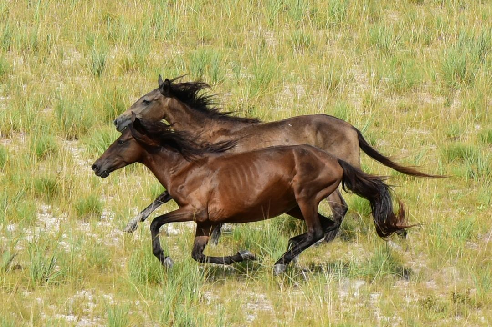

LAVRADEIRO
Cavalo lavradeiro ou Cavalo Lavrador é um cavalo feral que habita os lavrados do estado de Roraima, no norte do Brasil. É considerado um dos principais símbolos do estado e constitui uma das últimas populações de cavalos selvagens do mundo, estando hoje em perigo de extinção
As características marcantes desses cavalos são a resistência e velocidade. Podem manter velocidade média de 60 quilômetros por hora durante 30 minutos.
Em se tratando de espécie, os lavradeiros são o que se chama de cavalo selvagem ou cavalos que, embora tenham sua origem em animais domésticos, foram reintroduzidos à natureza e tiveram que se adaptar. No caso dos lavradeiros, a adaptação à vida selvagem foi bem sucedida.
Mesmo sendo a região do lavrado roraimense de vegetação pouco nutritiva, os animais se livraram de seus genes desfavoráveis através da evolução natural para viabilizar sua sobrevivência. Também evoluindo.

| Características | |
| tronco | possui uma estrutura óssea robusta, com um pescoço forte e um corpo compacto |
| Altura | varia entre 1,40 e 1,55 m na cernelha |
| Pelagem | variadas entre baio, castanho, alazão, tordilho entre outras |
| Temperamento | selvagem |